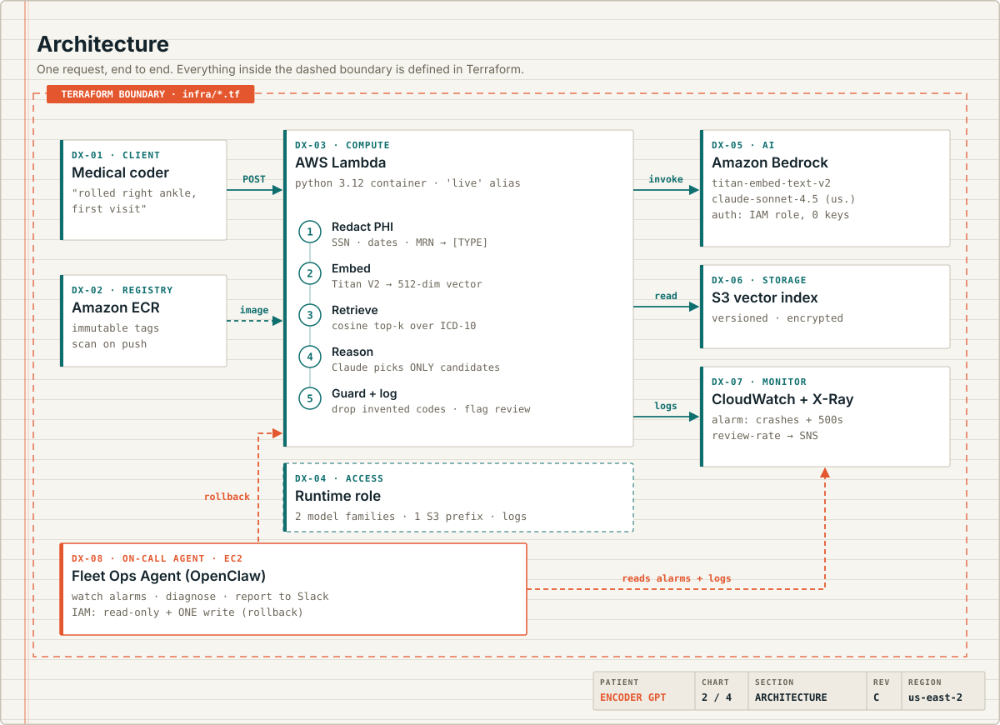
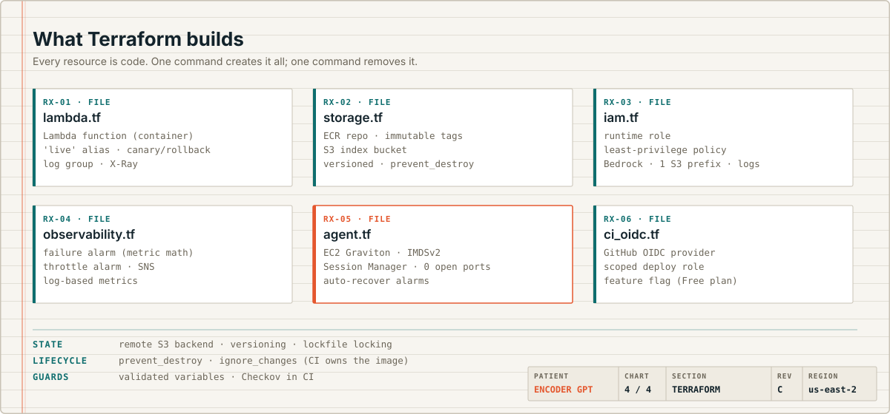
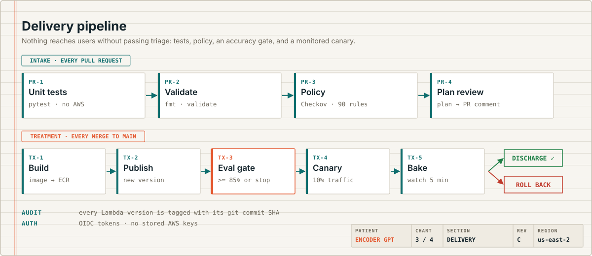

Case chart · AI platform engineering · Healthcare
From a chatbot prototype to a production AI platform
I built Encoder GPT on OpenAI to help coders find accurate ICD-10 codes. It worked, but PHI safety was a policy, accuracy was checked by hand, and nothing was monitored. This is the rebuild: Bedrock behind automatic PHI redaction, every resource in Terraform, deploys that must pass an accuracy gate, and an on-call AI agent allowed exactly one action: roll back.
Chief complaint
The prototype worked. It just wasn't safe to run.
Medical coders lose time hunting for the right ICD-10 code, and mistakes affect claims. The original custom GPT helped, but it had the gaps prototypes usually have.
| Prototype (custom GPT) | This rebuild | |
|---|---|---|
| PHI protection | Policy: "don't enter PHI" | Automatic redaction before the model sees anything |
| Credentials | Platform login | IAM roles, no API keys anywhere |
| Invented codes | Possible | Restricted to retrieved candidates, then filtered |
| Accuracy checks | Manual spot-checks | Automated evals gate every deploy |
| Monitoring | None | Alarms, traces, and a human-review-rate metric |
| Infrastructure | Clicked together | Terraform: versioned and reviewable |
Try it · Demo
Describe a visit, get codes back
Pick a sample to see a real answer recorded from the live service, or type your own. Your text never leaves this page: custom input runs the same redaction rules plus a keyword match in your browser.
Demo index: 25 common codes. Don't enter real patient information. Coders use the same service from Slack with /encode.
Results appear here.
Chart 2 · Architecture
One request, end to end
Everything inside the dashed boundary is defined in Terraform.

DX-05 · Amazon Bedrock
How the AI picks a code
Bedrock runs the models inside the AWS account boundary, and an IAM role grants access, so there are no API keys to leak. Each request runs five steps.
- Redact PHISSNs, dates, phone numbers, emails, and record numbers become [TYPE] placeholders before any model sees the text. The backend is swappable: free pattern matching for demos, or Amazon Comprehend Medical in production.
- EmbedTitan Text Embeddings V2 turns the description into a 512-number vector that captures its meaning.
- RetrieveCosine similarity finds the closest ICD-10 codes in the index. This is RAG: retrieval-augmented generation.
- ReasonClaude chooses only from the retrieved candidates and returns a confidence score and a rationale.
- GuardAny code Claude returns that wasn't retrieved is dropped. Low confidence flags the request for a human coder, who always makes the final call.
DX-03 · AWS Lambda
Serverless where it fits, a server where it doesn't
01
Runs only when called
No server to patch or pay for while idle. Demo traffic costs pennies.
02
Versions and a live alias
Callers always hit live. The pipeline moves it, which makes canary releases and one-step rollback possible.
03
EC2 for the agent
The on-call agent must stay connected to Slack and run on a schedule, so it gets an always-on Graviton instance instead.
RX · Terraform
Every resource is code
One command creates the whole system, and one command removes it. Nothing is clicked together in the console.

- Remote state
- Versioned, private S3 with lockfile locking, so a damaged state file can be restored.
- ignore_changes
- Terraform owns the function's shape; CI/CD owns which image runs. Without it, every apply would undo the latest deploy.
- prevent_destroy
- Protects the ICD-10 index from an accidental destroy.
- Least privilege
- The runtime role can call two model families, read one S3 prefix, and write logs. Nothing else.
- Feature flags
- Parts an account may block (GitHub OIDC, reserved concurrency, the agent) turn on and off without breaking the rest.
- Policy checks
- Checkov scans every change; each skipped rule is documented with its reason.
TX · Delivery pipeline
Trust built into the system, not into reviewers
No change reaches users without passing tests, policy checks, an accuracy gate, and a monitored canary. If anything fails, it rolls back on its own.

DX-08 · On-call agent
An AI that operates the service, with one permission to change it
The Fleet Ops Agent is a persistent OpenClaw agent on AWS that works like a junior on-call engineer.
WATCH
Checks health on a schedule
Reads alarms and logs every two hours on weekdays and posts a morning digest to Slack, Telegram, or Discord, with email alerts on the side.
DIAGNOSE
Follows the runbook
Works layer by layer: what changed, what the logs say, and which layer failed.
ACT
Rolls back, or escalates
Rolls back a bad deploy when the rules allow it, then verifies with evals. For problems a rollback can't fix, it hands a human the exact fix.
The safety model: the agent's instructions say what it should do; IAM decides what it can do. It has read-only access plus one write, moving the live alias, and an explicit deny blocks code, IAM, and storage changes. No SSH, no open ports, no stored keys.
Case notes
Four problems I diagnosed while deploying it
Each one sat in a different layer, and each fix lives in code with the reason documented.
| Symptom | Diagnosis | Fix |
|---|---|---|
| Storage bucket denied | The error named a service control policy: a rule above the account that overrides its permissions. The same request succeeded in another region, proving the account was locked to its home region. | Region became a setting instead of hardcoded. |
| GitHub connection denied | The same guardrail blocks creating identity providers on this account type. | Made it an on/off flag so the core service still deploys. |
| Lambda limit rejected | New accounts get 10 concurrent executions, and AWS keeps all 10 unreserved. | Made the limit configurable, defaulting to unreserved. |
| Alarm couldn't fire | The code catches its own errors and returns HTTP 500, so the built-in error metric stayed at zero. | Added a log-based failure metric and combined both in one alarm. |
The last one was caught by reasoning about how the code actually fails, before it hid a real incident.
Vitals · Drift
Treating drift as a deployment problem
ICD-10-CM changes every October 1st, and models change underneath you. Every moving part is versioned, and none changes without passing evals and a canary.
DATA
The code set changes
Each year's index is built as a new version, tested against the old one, then rolled out like code.
RETRIEVAL
The corpus grows
At ~74,000 codes: exact in-memory vector search plus keyword matching, so precise terms aren't blurred.
MODEL
Behavior shifts quietly
Model, prompt, and index versions are logged per request, and a rising human-review rate signals drift evals missed.
Plan
Next
- Index the full code setAll ~74,000 ICD-10-CM codes with in-memory vector search, hybrid keyword matching, and code-set versioning. About three cents of embedding cost.
- Record the agent catching a bad deployA chaos script puts a broken version live; the agent finds it, rolls back, verifies with evals, and reports in Slack.
- Grow the evalsCases across every ICD-10 chapter, with accuracy tracked over time.